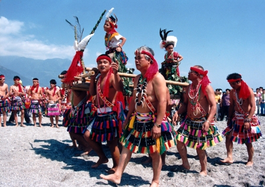

阿美族介紹
飲食
米食
獵捕
採集
米酒
米食
阿美族的日常飲食有農耕活動生產的稻米作物。目前阿美族人以稻米（panay）為主食，但糯米在文化中仍然具有重要的地位，在婚喪喜慶的儀式中都會出現。阿美族人將蒸熟的糯米飯稱為hakhak，將糯米飯舂打後的麻糬則稱為toron，兩者今日都成為代表花蓮和臺東的特產。獵捕
阿美族的日常飲食也包含了捕漁狩獵所獲的魚肉類。捕魚與狩獵所獲得的魚類與獸肉，為阿美族人食物中的蛋白質來源，其中獨具風味的石頭火鍋烹飪法與醃肉（siraw）非常具有文化特色。石頭火鍋是將高熱的石頭，丟入以檳榔葉做成的鍋子（cifar/kadong）當中，用以烹煮鍋內魚蝦，相當具有民族風情；保存肉類而醃製的山豬肉siraw，也因氣味獨特而具有代表性。採集
阿美族對植物採集有著豐富的知識，而善於將野菜應用於飲食中，因此又被戲稱為吃草的民族，部落中常見的野菜與植物有檳榔（icep）、毛柿（kamaya/kafohongay）、麵包樹（apalo/facidol）等。阿美族人會在居家四周種植檳榔樹，收成後可作為休閒零食外，也是婚節祭祀、男女交誼時的重要食品，阿美語稱為icep米酒
對於阿美族來說，酒是神聖的，所以釀酒就會有許多的禁忌在，阿美族人主要是以女性來釀酒，在她們釀酒的前一天是不得和另一半行房的，在月事來時更不可以釀酒。在阿美族裡「馬拉桑」是「酒醉」的意思，即是小米酒，相傳已有近千年的文化，是我們台灣原住民的最根本的重要文化，小米酒是用糯米加上酵母釀製，釀出的糯米酒會在祭典的時候使用，在祭典上代表著豐收的意思，同時也是是最具代表台灣特色的酒品。不管是用小米釀造的酒或是紅藜、糯米釀製的酒，現在都已經被製酒業者或者觀光景點的店家通稱為小米酒，不過對原住民族人來說，兩者大不相同。
服飾
男性
女性
男性
從阿美族的服裝與頭飾，就可明顯地分辨出不同的年齡階級，像是阿美族服飾男生的話，少男（約18歲以前）會穿著短裙、束腹帶；成年之後的男子會晉升為青年組，可以穿著全套的服裝，包括頭飾、頭巾、藍色對襟圓領長袖短上衣、霞披、短裙、綁腿褲或是流蘇裙。女性
男性服飾可以看出年齡，女性當然也可以！阿美族服飾女生的花帽有大小之分，一般婦女、已婚婦女頭戴大花帽，年輕的小少女則是穿戴小花帽。建築
瞭望台
集會所
家屋
瞭望台
瞭望台阿美語稱 pikecoran，以前瞭望台相當於是部落的眼目，由部落青年輪流看守，是守護全部落的精神象徵。相傳在清光緒年間，噶瑪蘭族自花蓮移入，與當地阿美族發生衝突，阿美族為安全考量，於是建造出瞭望台，讓年輕人輪流勘查，以保護自己的部落。建造瞭望台的材料都是以竹子跟茅草等，都是以大自然環境中所取得的建材為主，偶爾也會用木材當建材。因時代變遷與社會改變，瞭望台漸漸不被需要與使用，但是對於族人來說瞭望台始終是部落精神的象徵物，無法至原住民部落文化裡所抹滅及消失的，因為它屬於部落文化的產物，所代表的含意是深遠、有意義、且供族人們回憶。
集會所
阿美族過去傳統部落以集會所為中心，家戶比鄰而居，部落外圍為耕地、獵場或漁區，屬於聚居型部落；部落建有瞭望臺、集會所以維繫部落安全，傳統家屋由住屋、穀倉與豬舍或牛舍等建物所構成。家屋
阿美族傳統家屋以茅草興建，為單室前門的長方形住家，每二、三年左右會在秋天把屋頂茅草換新。家屋內部以木板、竹板區隔分出廚房、客廳、寢室等不同空間，屋內的核心位置是三塊石塊堆疊而成的爐灶（paruod）。二十世紀因為社會環境與經濟產業轉型，鋼筋水泥構建的家屋逐漸增加，成為今日族人主要的住屋形式。音樂
歌舞
歌舞
歌舞阿美族的歌謠與舞蹈通常同時存在，歌謠用領唱與答唱、吟唱歌詠及複音對位的方式，呈現宗教儀式、宴會交誼與休閒需求的不同表現，再加上舞步、隊形的變化，展現出多樣化的特色。阿美族歌謠當中，臺東阿美族人郭英男所演唱的老人飲酒歌，被使用為民國85 年（1996）亞特蘭大奧運宣傳曲，成為享譽國際性的阿美族歌謠。祭典
豐年祭
漁撈季
豐年祭
豐年祭是阿美族人在小米收穫後，族人為感謝神靈而舉行的祭典。豐年祭的名稱，各部落因說法不一，有malalikid、malikoda、kiluma’an 等說法，後來受日本語影響而有zukimisai（月見祭）與siukakukai（收穫會）等不同說法，現在多稱為豐年祭。豐年祭原是小米收穫後進行，在部落稻米種植面積大量增加後，祭典時間改為稻米收割後舉行。每年7 月開始，各部落按照稻米收成時間由南往北安排辦理，祭典時間為期1 ∼ 7 天之間。豐年祭雖然以豐收為名，但內容包括豐收、謝神、聯誼、社交與年齡階級晉級儀式、軍事訓練驗收儀式等，是具經濟、宗教、社會、政治、文化等多性質的綜合活動。豐年祭的多面向活動，具有多元文化特質的意義，加上參與人數眾多，規模相當盛大。阿美族人即使移居都市，仍然持續辦理豐年祭典，傳承各項傳統文化與觀念，這個祭典也是新一代族人對部落文化認同的重要活動。

漁撈季
用傳統檳榔葉柄食盒烹煮魚 阿美族的漁撈祭包含海祭與河祭，是在每年5、6 月間祭祀海神或河川神的活動，族人藉此祈求出海平安或撈捕魚類滿載而歸。漁撈祭典有不同的名稱，在海邊進行的海祭，北部阿美稱為mia’adis，海岸阿美族稱為misacepo’，馬蘭阿美族稱為mikesi’；撈捕淡水魚的河川祭，沿秀姑巒溪兩岸的阿美族人稱為komoris。而都歷部落於民國70 年（1981） 中斷過海祭， 復於民國100 年（2011）時恢復此祭儀，更名為pafafuy。 傳統領袖帶領族人祭祖 漁撈祭具有敬老尊賢的意義，祭典由青年以魚蟹、米酒祭拜河神或海神後揭開序幕，接著由各年齡階層進入海河溪流中撈捕魚類。近午時分，青年將捕獲的魚類集中、烹煮，並按照年齡階級的輩份順序，將煮熟的漁獲送交長者、耆老品嚐，以表示老者優先，而年長者也會賞賜漁獲給表現良好的年輕人，具有互助共享、重視長者等倫理觀念。
信仰
天上神
地下靈
巫師
宗教
.png)